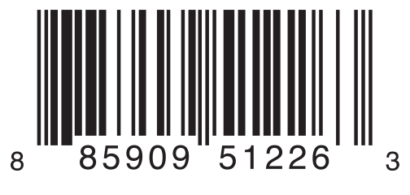

枚举为一组相关的值定义了一个共同的类型，使你可以在你的代码中以类型安全的方式来使用这些值。
如果你熟悉 C 语言，你会知道在 C 语言中，枚举会为一组整型值分配相关联的名称。Swift 中的枚举更加灵活，不必给每一个枚举成员提供一个值。如果给枚举成员提供一个值（称为原始值），则该值的类型可以是字符串、字符，或是一个整型值或浮点数。
此外，枚举成员可以指定任意类型的关联值存储到枚举成员中，就像其他语言中的联合体（unions）和变体（variants）。你可以在一个枚举中定义一组相关的枚举成员，每一个枚举成员都可以有适当类型的关联值。
在 Swift 中，枚举类型是一等（first-class）类型。它们采用了很多在传统上只被类（class）所支持的特性，例如计算属性（computed properties），用于提供枚举值的附加信息，实例方法（instance methods），用于提供和枚举值相关联的功能。枚举也可以定义构造函数（initializers）来提供一个初始值；可以在原始实现的基础上扩展它们的功能；还可以遵循协议（protocols）来提供标准的功能。
想了解更多相关信息，请参见 属性，方法，构造过程，扩展 和 协议。
使用 enum 关键词来创建枚举并且把它们的整个定义放在一对大括号内：
enum SomeEnumeration { // 枚举定义放在这里}下面是用枚举表示指南针四个方向的例子：
xxxxxxxxxxenum CompassPoint { case north case south case east case west}枚举中定义的值（如 north，south，east 和 west）是这个枚举的成员值（或成员）。你可以使用 case 关键字来定义一个新的枚举成员值。
注意
与 C 和 Objective-C 不同，Swift 的枚举成员在被创建时不会被赋予一个默认的整型值。在上面的
CompassPoint例子中，north，south，east和west不会被隐式地赋值为0，1，2和3。相反，这些枚举成员本身就是完备的值，这些值的类型是已经明确定义好的CompassPoint类型。
多个成员值可以出现在同一行上，用逗号隔开：
xxxxxxxxxxenum Planet { case mercury, venus, earth, mars, jupiter, saturn, uranus, neptune}每个枚举定义了一个全新的类型。像 Swift 中其他类型一样，它们的名字（例如 CompassPoint 和 Planet）以一个大写字母开头。给枚举类型起一个单数名字而不是复数名字，以便于：
xxxxxxxxxxvar directionToHead = CompassPoint.westdirectionToHead 的类型可以在它被 CompassPoint 的某个值初始化时推断出来。一旦 directionToHead 被声明为 CompassPoint 类型，你可以使用更简短的点语法将其设置为另一个 CompassPoint 的值：
xxxxxxxxxxdirectionToHead = .east当 directionToHead 的类型已知时，再次为其赋值可以省略枚举类型名。在使用具有显式类型的枚举值时，这种写法让代码具有更好的可读性。
你可以使用 switch 语句匹配单个枚举值：
xxxxxxxxxxdirectionToHead = .southswitch directionToHead {case .north: print("Lots of planets have a north")case .south: print("Watch out for penguins")case .east: print("Where the sun rises")case .west: print("Where the skies are blue")}// 打印“Watch out for penguins”你可以这样理解这段代码：
“判断 directionToHead 的值。当它等于 .north，打印 “Lots of planets have a north”。当它等于 .south，打印 “Watch out for penguins”。”
……以此类推。
正如在 控制流 中介绍的那样，在判断一个枚举类型的值时，switch 语句必须穷举所有情况。如果忽略了 .west 这种情况，上面那段代码将无法通过编译，因为它没有考虑到 CompassPoint 的全部成员。强制穷举确保了枚举成员不会被意外遗漏。
当不需要匹配每个枚举成员的时候，你可以提供一个 default 分支来涵盖所有未明确处理的枚举成员：
xxxxxxxxxxlet somePlanet = Planet.earthswitch somePlanet {case .earth: print("Mostly harmless")default: print("Not a safe place for humans")}// 打印“Mostly harmless”在一些情况下，你会需要得到一个包含枚举所有成员的集合。可以通过如下代码实现：
令枚举遵循 CaseIterable 协议。Swift 会生成一个 allCases 属性，用于表示一个包含枚举所有成员的集合。下面是一个例子：
xxxxxxxxxxenum Beverage: CaseIterable { case coffee, tea, juice}let numberOfChoices = Beverage.allCases.countprint("\(numberOfChoices) beverages available")// 打印“3 beverages available”在前面的例子中，通过 Beverage.allCases 可以访问到包含 Beverage 枚举所有成员的集合。allCases 的使用方法和其它一般集合一样——集合中的元素是枚举类型的实例，所以在上面的情况中，这些元素是 Beverage 值。在前面的例子中，统计了总共有多少个枚举成员。而在下面的例子中，则使用 for-in 循环来遍历所有枚举成员。
xxxxxxxxxxfor beverage in Beverage.allCases { print(beverage)}// coffee// tea// juice在前面的例子中，使用的语法表明这个枚举遵循 CaseIterable 协议。想了解 protocols 相关信息，请参见 协议。
枚举语法那一小节的例子演示了如何定义和分类枚举的成员。你可以为 Planet.earth 设置一个常量或者变量，并在赋值之后查看这个值。然而，有时候把其他类型的值和成员值一起存储起来会很有用。这额外的信息称为关联值，并且你每次在代码中使用该枚举成员时，还可以修改这个关联值。
你可以定义 Swift 枚举来存储任意类型的关联值，如果需要的话，每个枚举成员的关联值类型可以各不相同。枚举的这种特性跟其他语言中的可识别联合（discriminated unions），标签联合（tagged unions），或者变体（variants）相似。
例如，假设一个库存跟踪系统需要利用两种不同类型的条形码来跟踪商品。有些商品上标有使用 0 到 9 的数字的 UPC 格式的一维条形码。每一个条形码都有一个代表数字系统的数字，该数字后接五位代表厂商代码的数字，接下来是五位代表“产品代码”的数字。最后一个数字是检查位，用来验证代码是否被正确扫描：

其他商品上标有 QR 码格式的二维码，它可以使用任何 ISO 8859-1 字符，并且可以编码一个最多拥有 2,953 个字符的字符串：
这便于库存跟踪系统用包含四个整型值的元组存储 UPC 码，以及用任意长度的字符串储存 QR 码。
在 Swift 中，使用如下方式定义表示两种商品条形码的枚举：
xxxxxxxxxxenum Barcode { case upc(Int, Int, Int, Int) case qrCode(String)}以上代码可以这么理解：
“定义一个名为 Barcode 的枚举类型，它的一个成员值是具有 (Int，Int，Int，Int) 类型关联值的 upc，另一个成员值是具有 String 类型关联值的 qrCode。”
这个定义不提供任何 Int 或 String 类型的关联值，它只是定义了，当 Barcode 常量和变量等于 Barcode.upc 或 Barcode.qrCode 时，可以存储的关联值的类型。
然后你可以使用任意一种条形码类型创建新的条形码，例如：
xxxxxxxxxxvar productBarcode = Barcode.upc(8, 85909, 51226, 3)上面的例子创建了一个名为 productBarcode 的变量，并将 Barcode.upc 赋值给它，关联的元组值为 (8, 85909, 51226, 3)。
同一个商品可以被分配一个不同类型的条形码，例如：
xxxxxxxxxxproductBarcode = .qrCode("ABCDEFGHIJKLMNOP")这时，原始的 Barcode.upc 和其整数关联值被新的 Barcode.qrCode 和其字符串关联值所替代。Barcode 类型的常量和变量可以存储一个 .upc 或者一个 .qrCode（连同它们的关联值），但是在同一时间只能存储这两个值中的一个。
你可以使用一个 switch 语句来检查不同的条形码类型，和之前使用 Switch 语句来匹配枚举值的例子一样。然而，这一次，关联值可以被提取出来作为 switch 语句的一部分。你可以在 switch 的 case 分支代码中提取每个关联值作为一个常量（用 let 前缀）或者作为一个变量（用 var 前缀）来使用：
xxxxxxxxxxswitch productBarcode {case .upc(let numberSystem, let manufacturer, let product, let check): print("UPC: \(numberSystem), \(manufacturer), \(product), \(check).")case .qrCode(let productCode): print("QR code: \(productCode).")}// 打印“QR code: ABCDEFGHIJKLMNOP.”如果一个枚举成员的所有关联值都被提取为常量，或者都被提取为变量，为了简洁，你可以只在成员名称前标注一个 let 或者 var：
xxxxxxxxxxswitch productBarcode {case let .upc(numberSystem, manufacturer, product, check): print("UPC: \(numberSystem), \(manufacturer), \(product), \(check).")case let .qrCode(productCode): print("QR code: \(productCode).")}// 打印“QR code: ABCDEFGHIJKLMNOP.”在 关联值 小节的条形码例子中，演示了如何声明存储不同类型关联值的枚举成员。作为关联值的替代选择，枚举成员可以被默认值（称为原始值）预填充，这些原始值的类型必须相同。
这是一个使用 ASCII 码作为原始值的枚举：
xxxxxxxxxxenum ASCIIControlCharacter: Character { case tab = "\t" case lineFeed = "\n" case carriageReturn = "\r"}枚举类型 ASCIIControlCharacter 的原始值类型被定义为 Character，并设置了一些比较常见的 ASCII 控制字符。Character 的描述详见 字符串和字符 部分。
原始值可以是字符串、字符，或者任意整型值或浮点型值。每个原始值在枚举声明中必须是唯一的。
注意
原始值和关联值是不同的。原始值是在定义枚举时被预先填充的值，像上述三个 ASCII 码。对于一个特定的枚举成员，它的原始值始终不变。关联值是创建一个基于枚举成员的常量或变量时才设置的值，枚举成员的关联值可以变化。
在使用原始值为整数或者字符串类型的枚举时，不需要显式地为每一个枚举成员设置原始值，Swift 将会自动为你赋值。
例如，当使用整数作为原始值时，隐式赋值的值依次递增 1。如果第一个枚举成员没有设置原始值，其原始值将为 0。
下面的枚举是对之前 Planet 这个枚举的一个细化，利用整型的原始值来表示每个行星在太阳系中的顺序：
xxxxxxxxxxenum Planet: Int { case mercury = 1, venus, earth, mars, jupiter, saturn, uranus, neptune}在上面的例子中，Plant.mercury 的显式原始值为 1，Planet.venus 的隐式原始值为 2，依次类推。
当使用字符串作为枚举类型的原始值时，每个枚举成员的隐式原始值为该枚举成员的名称。
下面的例子是 CompassPoint 枚举的细化，使用字符串类型的原始值来表示各个方向的名称：
xxxxxxxxxxenum CompassPoint: String { case north, south, east, west}上面例子中，CompassPoint.south 拥有隐式原始值 south，依次类推。
使用枚举成员的 rawValue 属性可以访问该枚举成员的原始值：
xlet earthsOrder = Planet.earth.rawValue// earthsOrder 值为 3
let sunsetDirection = CompassPoint.west.rawValue// sunsetDirection 值为 "west"如果在定义枚举类型的时候使用了原始值，那么将会自动获得一个初始化方法，这个方法接收一个叫做 rawValue 的参数，参数类型即为原始值类型，返回值则是枚举成员或 nil。你可以使用这个初始化方法来创建一个新的枚举实例。
这个例子利用原始值 7 创建了枚举成员 Uranus：
xxxxxxxxxxlet possiblePlanet = Planet(rawValue: 7)// possiblePlanet 类型为 Planet? 值为 Planet.uranus然而，并非所有 Int 值都可以找到一个匹配的行星。因此，原始值构造器总是返回一个可选的枚举成员。在上面的例子中，possiblePlanet 是 Planet? 类型，或者说“可选的 Planet”。
注意
原始值构造器是一个可失败构造器，因为并不是每一个原始值都有与之对应的枚举成员。更多信息请参见 可失败构造器。
如果你试图寻找一个位置为 11 的行星，通过原始值构造器返回的可选 Planet 值将是 nil：
xxxxxxxxxxlet positionToFind = 11if let somePlanet = Planet(rawValue: positionToFind) { switch somePlanet { case .earth: print("Mostly harmless") default: print("Not a safe place for humans") }} else { print("There isn't a planet at position \(positionToFind)")}// 打印“There isn't a planet at position 11”这个例子使用了可选绑定（optional binding），试图通过原始值 11 来访问一个行星。if let somePlanet = Planet(rawValue: 11) 语句创建了一个可选 Planet，如果可选 Planet 的值存在，就会赋值给 somePlanet。在这个例子中，无法检索到位置为 11 的行星，所以 else 分支被执行。
递归枚举是一种枚举类型，它有一个或多个枚举成员使用该枚举类型的实例作为关联值。使用递归枚举时，编译器会插入一个间接层。你可以在枚举成员前加上 indirect 来表示该成员可递归。
例如，下面的例子中，枚举类型存储了简单的算术表达式：
xxxxxxxxxxenum ArithmeticExpression { case number(Int) indirect case addition(ArithmeticExpression, ArithmeticExpression) indirect case multiplication(ArithmeticExpression, ArithmeticExpression)}你也可以在枚举类型开头加上 indirect 关键字来表明它的所有成员都是可递归的：
xxxxxxxxxxindirect enum ArithmeticExpression { case number(Int) case addition(ArithmeticExpression, ArithmeticExpression) case multiplication(ArithmeticExpression, ArithmeticExpression)}上面定义的枚举类型可以存储三种算术表达式：纯数字、两个表达式相加、两个表达式相乘。枚举成员 addition 和 multiplication 的关联值也是算术表达式——这些关联值使得嵌套表达式成为可能。例如，表达式 (5 + 4) * 2，乘号右边是一个数字，左边则是另一个表达式。因为数据是嵌套的，因而用来存储数据的枚举类型也需要支持这种嵌套——这意味着枚举类型需要支持递归。下面的代码展示了使用 ArithmeticExpression 这个递归枚举创建表达式 (5 + 4) * 2
xxxxxxxxxxlet five = ArithmeticExpression.number(5)let four = ArithmeticExpression.number(4)let sum = ArithmeticExpression.addition(five, four)let product = ArithmeticExpression.multiplication(sum, ArithmeticExpression.number(2))要操作具有递归性质的数据结构，使用递归函数是一种直截了当的方式。例如，下面是一个对算术表达式求值的函数：
xxxxxxxxxxfunc evaluate(_ expression: ArithmeticExpression) -> Int { switch expression { case let .number(value): return value case let .addition(left, right): return evaluate(left) + evaluate(right) case let .multiplication(left, right): return evaluate(left) * evaluate(right) }}
print(evaluate(product))// 打印“18”该函数如果遇到纯数字，就直接返回该数字的值。如果遇到的是加法或乘法运算，则分别计算左边表达式和右边表达式的值，然后相加或相乘。